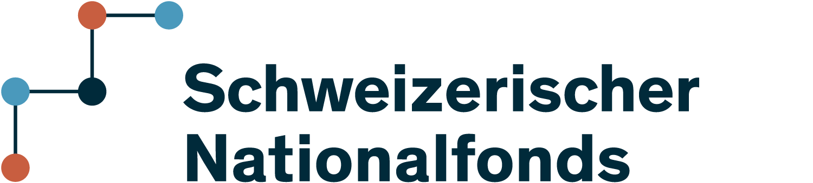

Welcome to the ANT documentation! ANT is a open-source package which provides a comprehensive framework for real-time M/EEG analysis and visualization, including:
Real-time feature extraction from M/EEG signals.
Processing at multiple levels: sensor-space to source-space.
3D visualization of brain activation on a rendered brain reconstructed from the subject’s MRI.
Integration with visualization modules to monitor neurofeedback responses in real time.
Real-time artifact correction methods, including: - ORICA (Online Recursive ICA) for source separation. - Adaptive regression (LMS) for removing blink artifacts from EEG. - Real-time SSP (Signal Space Projection) for MEG artifact correction. - HFC correction for MEG high-frequency artifacts.
Lightweight management of experimental projects, enabling organized and efficient experimentation.
Flexible and extensible tools for real-time neuroimaging, visualization, and neurofeedback applications.
Installation
You can install ANT via PyPI, Conda, or directly from Source.
💻 PyPI
$ pip install ant
🌟 Conda
$ conda install -c conda-forge ant
📦 From Source (GitHub)
$ pip install git+https://github.com/payamsash/ANT
Cite
If you use ANT, please consider citing our paper [1].
Supporting institutions
{kind=link}
The development of ANT was supported by the
Swiss National Science Foundation.
For more information, see:
GitHub repository: payamsash/ANT
Tutorials and guides in the examples section.